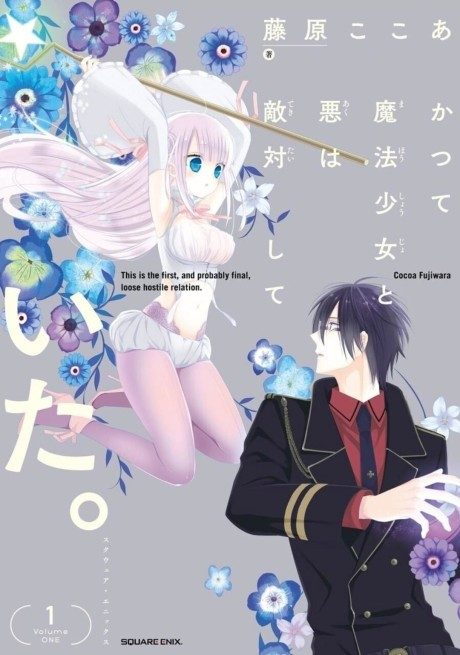

The Magical Girl and the Evil Lieutenant Used to Be Archenemies
かつて魔法少女と悪は敵対していた。
The anime ends the story its own way, apart from the manga.
7.4AniList score
—Animeter, no votes yet
12episodes
Anime finished. Where does the manga pick up?
StatusOwn ending
The anime adds an original ending in episode 12, and the manga stops at chapter 20 with its main conflict unresolved. Because the anime reorders and mixes material, start the manga from chapter 1. The manga was cancelled after the author died in 2015.